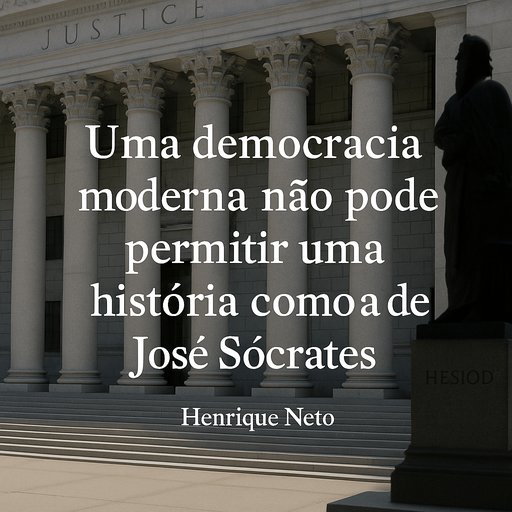

Publicado em 2025-07-11 19:44:23
Portugal assiste, mais uma vez, àquele que talvez seja o maior teatro de impunidade alguma vez encenado num tribunal europeu: o julgamento de José Sócrates.
Henrique Neto, industrial, ex-deputado e uma das vozes mais lúcidas da política portuguesa, disse-o sem hesitação:
“Uma democracia moderna não pode permitir uma história como a de José Sócrates.”
E tem razão. Porque quando um primeiro-ministro, com responsabilidades máximas no destino de um país, é acusado de corrupção passiva, branqueamento de capitais e fraude fiscal — e continua a desfilar nos media como se fosse um mártir da liberdade —, o que está em causa já não é apenas o réu. É o regime.
A justiça portuguesa, engasgada em formalismos, medos institucionais e arrastamentos processuais, parece incapaz de lidar com figuras poderosas.
Não por falta de provas — mas por excesso de hesitações.
E é assim que a democracia se transforma numa farsa operada por fantoches bem vestidos e protegidos por leis feitas à medida.
Enquanto Sócrates insulta juízes, nega tudo com pose de estadista e proclama inocência divina, os cidadãos honestos esperam há mais de uma década por justiça. Esperam… mas já não acreditam.
Eleger não basta.
Uma democracia moderna vive da confiança nas instituições, na transparência e na responsabilização dos que erram — sobretudo quando têm poder.
Quando há escândalo, mas não há consequência…
Quando há milhões desviados, mas ninguém preso…
Quando os inocentes pagam e os culpados escrevem crónicas…
Então já não temos uma democracia. Temos um simulacro.
O maior perigo é o cansaço cívico.
É o povo que já nem se indigna.
É o eleitor que diz “são todos iguais”.
É o jovem que desiste de votar.
É o silêncio que se instala como norma.
É a mentira repetida até se tornar cómoda.
O caso de José Sócrates não é uma exceção. É o espelho de um país que se habituou a ajoelhar perante os seus carrascos políticos.
Henrique Neto teve a coragem de dizê-lo.
Agora cabe-nos a nós ter a coragem de não esquecer.
Porque quem perdoa a corrupção institucionalizada, trai a democracia.
✍️ Francisco Gonçalves
Editor, Fragmentos de Caos
Porque o silêncio é o maior cúmplice da podridão
“Em Roma, não se pagava a traidores.
Em Portugal, paga-se bem — com cargos, favores e silêncio comprado.
Aqui, a traição é carreira. A corrupção, currículo. E o povo… é o patrocinador involuntário da vergonha.”
— Fragmentos de Caos